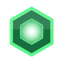
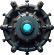
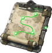
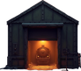
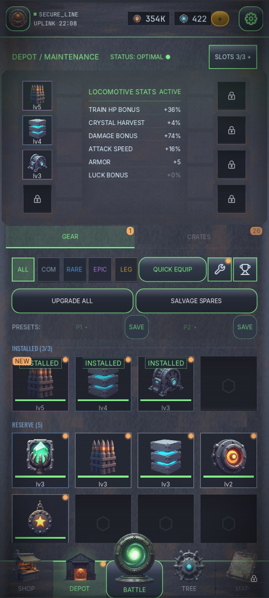

МАРШРУТ // 10 СЕКТОРОВ
ОТ ПУСТОШЕЙ ДО ЦИТАДЕЛИ

01
ЛЕДЯНЫЕ ПУСТОШИ

02
МЁРТВЫЙ ЛЕС

03
ГОРНЫЙ ПЕРЕВАЛ

04
ТОКСИЧНАЯ ЗОНА

05
ПЕПЕЛЬНАЯ ПУСТОШЬ

06
МЁРТВЫЙ МЕГАПОЛИС

07
РАДИОАКТИВНАЯ ПУСТЫНЯ

08
ЗАТОПЛЕННАЯ ЗОНА

09
КЛАДБИЩЕ МАШИН

10
ЛЕДЯНАЯ ЦИТАДЕЛЬ
Целиться не нужно — зенитки бьют сами. Ты ловишь кристаллы, что падают с неба, и между волнами решаешь, какой системе поезда жить.

Кристаллы падают с неба и должны быть пойманы до земли. Промахнулся — реактор не зарядится, дерево не откроется.

Вся сила рана — в контуре восстановления: 160+ узлов, платишь кристаллами между волнами.

Десять биомов со своими врагами, боссами и погодой — полоса ниже.

Платформы, вагоны, орудия, модули и трофейные ядра — собери собственный состав.
Мир игры — про машины, которые продолжают войну без людей. Сама игра сделана так же: код, графика, звук, баланс и тексты созданы искусственным интеллектом от первой строки до релиза.
Человек ставит задачу и принимает работу. Всё остальное делает ИИ — и об этом мы говорим прямо, а не мелким шрифтом.
Покупки и реклама за награду — необязательные.



Игра идёт в закрытом тесте Google Play на Android. Вход самостоятельный: писем ждать не нужно, вы вступаете сами и играете сегодня.
Два условия, без которых игру вы не увидите. Первое: все шаги делайте тем же Google-аккаунтом, под которым залогинены в Play Маркете на телефоне. Второе: если вы уже во внутреннем тесте, сначала выйдите из него, иначе закрытый трек вам не покажут.
ПОДРОБНО ПРО ТЕСТ